Bussysteme
SoSe 2023 Dr. Julian Huber
Steuerung
Ursprünge der Steuerungstechnik und Automatisierung
- 20–62 - Heron von Alexandria Automaten einer Wein und Milch spendenden Bacchus-Figur
- 1784 Webmaschinen von hölzernen Lochkarten
- 1835 erfindet Joseph Henry das elektromechanische Relais
- 1969 Odo J. Struger beim US-Unternehmen Allen-Bradley eine SPS (zeitgleich mit Richard E. Morley)

🧠 Evolution zu Industrie 4.0
-
Industrie 1.0 (1784): Einsatz von mechanischen Webstühlen, die insbesondere durch Lochkarten-Steuerungen und später durch umlaufenden Bänder zu Webmaschinen weiterentwickelt wurden.
-
Industrie 2.0 (1870): erster Einsatz von Fließbändern in den USA (Schlachthöfe) unter Nutzung elektrischer Antriebe, die durch entsprechende Schütz- und Relais-Steuerungen geschaltet wurden.
-
Industrie 3.0 (1969) Speicherprogrammierbaren Steuerungen, Durchbruch bei der Industrieelektronik und Informationstechnik zur massenweisen Steuerung und Automatisierung der Produktion
-
Industrie 4.0 (2012) Cyber-Physikalischer Systeme mit globaler Vernetzung zur global optimierten Steuerung der international organisierten Produktion (Internet der Dinge).
Ablaufsteuerung
- steuert den Ablauf ereignisdiskreter Prozesse (Schrittkette). Beim Erreichen eines Schwellwertes einer Steuergröße (Ereignis) wir ein weiterer Prozess angestoßen.
- z.B. Ablauf in einer Waschmaschine
- z.B. Human Centric Lighting
- z.B. Treppenhauslicht
Finite State Machine
- In Abhängigkeit vom Systemzustand erwarten wir unterschiedliches Verhalten z.B.
- Nach Tastendruck soll die Lampe angeschaltet werden
- Nach Ablauf einer Wartezeit soll die Lampe ausgeschaltet werden
- Davor gibt es ein Flackern als Warnung
- Nach einem weiteren Tastendruck wird die Wartezeit zurückgesetzt
- Einfache Systeme lassen sich meist durch Ihre Zustände und deren Übergänge beschreiben
- Durch die Beschreibung als State-Machine können wir das Verhalten des Systems sauber trennen und die Implementierung vereinfachen
Implementierung eines Cola-Automaten
- Der Automat startet im Zustand
Auswahl anfordern - Der Automat kann in den Zustand
Bezahlung anfordernwechseln - Wird die geforderte Summe erreicht, wechselt der Automat in den Zustand
Ware ausgeben - Ist die Ausgabe abgeschlossen, wechselt der Automat wieder in den Zustand
Auswahl anfordern - Wird die Bezahlung abgebrochen, wechselt der Automat in den Zustand
Rückgeld herausgebenund dann wieder in den ZustandAuswahl anfordern

(Deterministic) Finite State Machine (Endlicher Automat)
- Dieser Ansatz basiert auf der Theorie der formalen Sprachen
- Eine DFSM beschreibt ein System mit endlich vielen Zuständen beschreibt
- Eine DFSM ist ein 5-Tupel \(M = (Q, \Sigma, q_0, F, \delta)\) mit
- Endlicher Zustandsmenge \(Q\)
- Endliche Eingabealphabet \(\Sigma\)
- Endlicher Startzustand \(q_0 \in Q\)
- Endlicher Endzustandsmenge \(F \subseteq Q\)
- Übergangsfunktion \(\delta: Q \times \Sigma \rightarrow Q\)
In der Theorie der formalen Sprachen :nerd_face:
 * \(Q = \{S_1, S_2\}\)
* \(\Sigma = \{0,1\}\)
* \(q_0 = S_1\)
* \(F = \{S_1\}\)
* \(\delta(S_1, 0) = S_2\), \(\delta(S_1, 1) = S_1\)
* \(\delta(S_2, 0) = S_1\), \(\delta(S_2, 1) = S_2\)
* Akzeptiert (endet in \(F\))
*
* \(Q = \{S_1, S_2\}\)
* \(\Sigma = \{0,1\}\)
* \(q_0 = S_1\)
* \(F = \{S_1\}\)
* \(\delta(S_1, 0) = S_2\), \(\delta(S_1, 1) = S_1\)
* \(\delta(S_2, 0) = S_1\), \(\delta(S_2, 1) = S_2\)
* Akzeptiert (endet in \(F\))
* 1, 11, 01101, 11001
* Akzeptiert nicht (endet nicht in \(F\))
* 0, 10, 10100, 01001
* Anwendung
* Parser
* Regular Expressions
In der Programmierpraxis
- Die Knoten stellen Systemzustände dar. Innerhalb dieser Zustände muss das Systemen nicht statisch sein (z.B. kann während dem Systemzustand
Bezahlung anfordernMünzgeld eingeworfen werden) - Die gerichteten Kanten stellen Übergänge zwischen den Zuständen dar, die durch Events und Bedingungen ausgelöst werden
- Die Systemzustände können nur in festgelegten Reihenfolgen durchlaufen werden
- Ein Endzustand ist optional
Beispiel: Treppenlicht

stateDiagram
A : LED ein
B : LED flackert
E : LED aus
[*] --> E : Systemstart
E --> A : Button
B --> A : Button
A --> B : 2 Sekunden
B --> E : 2 Sekunden
import time
import board
import digitalio
from adafruit_debouncer import Debouncer
# GPIO-Pins für LED und Button konfigurieren
led_pin = board.GP15 # Beispiel-Pin, bitte anpassen
button_pin = board.GP14 # Beispiel-Pin, bitte anpassen
led = digitalio.DigitalInOut(led_pin)
led.direction = digitalio.Direction.OUTPUT
button = digitalio.DigitalInOut(button_pin)
button.direction = digitalio.Direction.INPUT
button.pull = digitalio.Pull.UP
# Zustandsvariablen initialisieren
state = "LED_AUS"
start_time = None
flashing_time = 0.2 # Dauer des kurzen Flackerns in Sekunden
flashing = False
# Button-Entprellung konfigurieren
button_debouncer = Debouncer(button)
while True:
button_debouncer.update()
# Zustandsübergänge überwachen
if state == "LED_AUS" and button_debouncer.fell:
state = "LED_AN"
start_time = time.monotonic()
flashing = False # Zurücksetzen des Flackerstatus
elif state == "LED_AN" and time.monotonic() - start_time >= 2:
state = "LED_GEDIMMT"
start_time = time.monotonic()
flashing = True # Aktivieren des Flackerns
elif state == "LED_GEDIMMT" and time.monotonic() - start_time >= 2:
state = "LED_AUS"
start_time = None
flashing = False # Zurücksetzen des Flackerstatus
# Zustandsaktionen ausführen
if state == "LED_AN":
led.value = True
elif state == "LED_GEDIMMT":
if flashing:
led.value = not led.value # Flackern umschalten
else:
led.value = True # Dauerhaft eingeschaltet
elif state == "LED_AUS":
led.value = False
time.sleep(0.1) # Kurze Pause für die Stabilität des Debouncers
:writing_hand: Aufgabe: Implementierung eines Treppenhauslichts
- Zeichen Sie eine State Machine, die nach dem Flackern noch einmal 2 Sekunden wartet, bevor sie die LED ausschaltet
- Implementieren Sie die State Machine in Python
:nerd_face: :writing_hand: Aufgabe: Implementierung eines Dimmers
- Implementieren Sie einen Dimmer, der durch halten des Tasters die Helligkeit die PWM steuert
- Durch halten des Tasters soll die Helligkeit von 0% auf 100% hoch- bzw. heruntergefahren werden
- durch kurzes drücken des Tasters soll die Helligkeit auf 0% bzw. 100% gesetzt werden
Verknüpfungssteuerungen
- verknüpfen Bedien- und/oder Messsignale gemäß einem Steuerprogramms mit (binären) Stellsignalen
- z.B. Wechsel- oder Kreuzschaltungen für das Ein- und Ausschalten von Leuchten

vereinfacht: wenn H_ROOM zu genüge hell ist, dann schalte das Licht aus